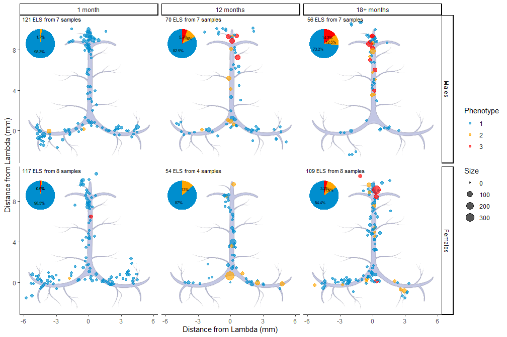
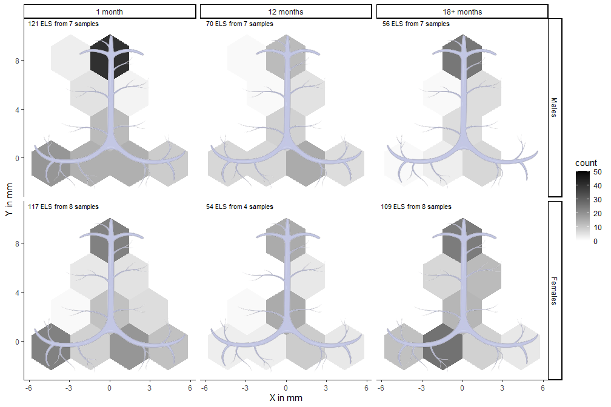
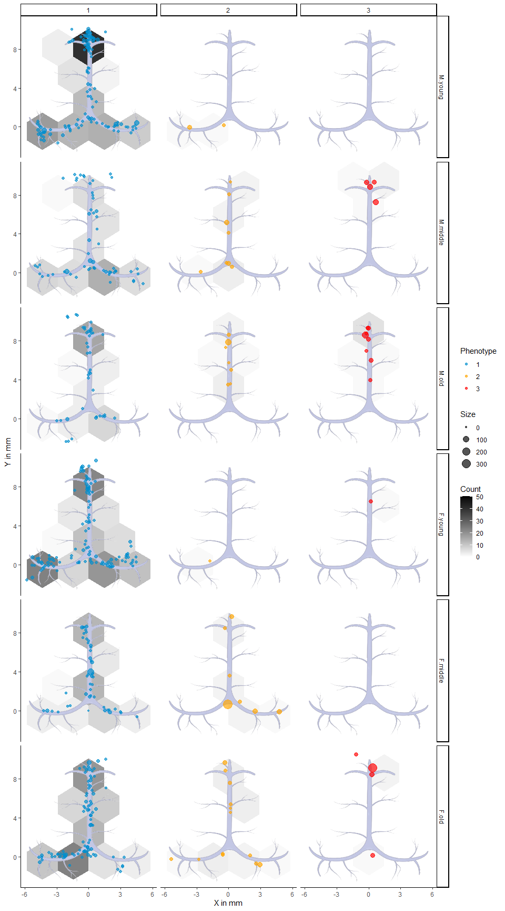

| Sex | Age | Mice | Structures | AvgDiameter | AvgDistance | Phenotype (1-2-3) | Sinus (0-90-180) | Desc |
|---|---|---|---|---|---|---|---|---|
| F | young | 8 | 117 | 9.1 | 4.5 | 115-1-1 | 33-52-32 | 1 month |
| F | middle | 4 | 54 | 20.1 | 4.3 | 47-7-0 | 13-35-6 | 12 months |
| F | old | 8 | 109 | 14.3 | 4.4 | 92-13-4 | 5-63-41 | 18+ months |
| M | young | 7 | 121 | 10.6 | 5.3 | 119-2-0 | 24-71-26 | 1 month |
| M | middle | 7 | 70 | 14.5 | 4.8 | 58-8-4 | 18-40-12 | 12 months |
| M | old | 7 | 56 | 15.3 | 6.2 | 41-7-8 | 6-43-7 | 18+ months |
Whithin-Strain Analysis
Overview
In this report we profile the meninges of APP mice in terms of Tertiary Lymphatic Structures (TLSs). The following chapters provide insight to different aspects of the TLSs, such as their location, distribution and density.
Exploratory statistics
The current analysis includes data on 527 lymphatic structures from 41 mice, belonging to 1 strains, 3 age categories and 2 genders, for a total of 6 groups (Table 1).
Figure 1 shows the distribution the TLSs distribute in terms of their length and size across all tissues.
Distribution of structures

Density of structures

Distribution and Density of structures
Distribution by phenotype
